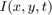
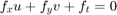

Lucas-Kanade Optical Flow
In this demo, we will:
- understand the concepts of optical flow and its estimation using Lucas-Kanade method.
- use functions like cv.calcOpticalFlowPyrLK to track feature points in a video.
Sources:
Contents
Optical Flow
Optical flow is the pattern of apparent motion of image objects between two consecutive frames caused by the movemement of object or camera. It is 2D vector field where each vector is a displacement vector showing the movement of points from first frame to second. Consider the image below:

It shows a ball moving in 5 consecutive frames. The arrow shows its displacement vector. Optical flow has many applications in areas like:
- Structure from Motion
- Video Compression
- Video Stabilization
- etc.
Optical flow works on several assumptions:
- The pixel intensities of an object do not change between consecutive frames
- Neighbouring pixels have similar motion
Consider a pixel  in first frame. It moves by distance in next frame taken after time. So since those pixels are the same and intensity does not change, we can say,
Then take taylor series approximation of right-hand side, remove common terms and divide by to get the following equation:

where
Above equation is called Optical Flow equation. In it, we can find  and
and  , they are image gradients. Similarly is the gradient along time. But is unknown. We cannot solve this one equation with two unknown variables. So several methods are provided to solve this problem
and one of them is Lucas-Kanade.
, they are image gradients. Similarly is the gradient along time. But is unknown. We cannot solve this one equation with two unknown variables. So several methods are provided to solve this problem
and one of them is Lucas-Kanade.
Lucas-Kanade method
We have seen an assumption before, that all the neighbouring pixels will have similar motion. Lucas-Kanade method takes a 3x3 patch around the point. So all the 9 points have the same motion. We can find for these 9 points. So now our problem becomes solving 9 equations with two unknown variables which is over-determined. A better solution is obtained with least square fit method. Below is the final solution which is two equation-two unknown problem and solve to get the solution:
(Note similarity of inverse matrix with Harris corner detector. It denotes that corners are better points to be tracked.)
So from user point of view, idea is simple, we give some points to track, we receive the optical flow vectors of those points. But again there are some problems. Until now, we were dealing with small motions. So it fails when there is large motion. So again we go for pyramids. When we go up in the pyramid, small motions are removed and large motions becomes small motions. So applying Lucas-Kanade there, we get optical flow along with the scale.
Lucas-Kanade Optical Flow in OpenCV
OpenCV provides all these in a single function, cv.calcOpticalFlowPyrLK. Here, we create a simple application which tracks some points in a video. To decide the points, we use cv.goodFeaturesToTrack. We take the first frame, detect some Shi-Tomasi corner points in it, then we iteratively track those points using Lucas-Kanade optical flow. For the function cv.calcOpticalFlowPyrLK we pass the previous frame, previous points and next frame. It returns next points along with some status numbers which has a value of 1 if next point is found, else zero. We iteratively pass these next points as previous points in next step. See the code below.
This code doesn't check how correct are the next keypoints. So even if any feature point disappears in image, there is a chance that optical flow finds the next point which may look close to it. So actually for a robust tracking, corner points should be detected in particular intervals. OpenCV samples comes up with such a sample which finds the feature points at every 5 frames. It also run a backward-check of the optical flow points got to select only good ones.
Video
Prepare video source
if mexopencv.require('vision') vid = fullfile(toolboxdir('vision'), 'visiondata', 'visiontraffic.avi'); %cap.PosFrames = 80; % skip first few seconds with no motion elseif true vid = fullfile(mexopencv.root(), 'test', '768x576.avi'); else vid = fullfile(mexopencv.root(), 'test', 'sparse_optical_flow.avi'); if exist(vid, 'file') ~= 2 disp('Downloading video...') url = 'https://cdn.rawgit.com/opencv/opencv_extra/3.2.0/gpu_demos_pack/demos/sparse_optical_flow/data/sparse_optical_flow.avi'; urlwrite(url, vid); end end if exist(vid, 'file') ~= 2, vid = 0; end cap = cv.VideoCapture(vid); assert(cap.isOpened(), 'Failed to initialize capturing');
First frame
Grab first frame
frame = cap.read(); assert(~isempty(frame), 'Failed to read frame'); prev = cv.cvtColor(frame, 'RGB2GRAY');
Detect corners using Shi-Tomasi method (performed only once at the start)
pts0 = cv.goodFeaturesToTrack(prev, ... 'MaxCorners',100, 'QualityLevel',0.3, 'MinDistance',7, 'BlockSize',7); pts0 = cat(1, pts0{:}); assert(~isempty(pts0), 'No corners found'); fprintf('%d points\n', size(pts0,1));
59 points
Initialize a mask image for drawing purposes (on which point tracks are drawn and remembered)
mask = zeros(size(frame), class(frame));
Some random colors for plotting
N = 64;
clrs = uint8(hsv(N) * 255); % randi([0 255], [N 3])
clrs(:,4) = 0;Plot
hImg = imshow(frame);
title('PyrLK [Sparse]')Main loop
while ishghandle(hImg) % Grab next frame frame = cap.read(); if isempty(frame), break; end next = cv.cvtColor(frame, 'RGB2GRAY'); % Calculate sparse optical flow using Lucas-Kanade method to track points [pts1, status] = cv.calcOpticalFlowPyrLK(prev, next, pts0, ... 'WinSize',[15 15], 'MaxLevel',2, ... 'Criteria',struct('type','Count+EPS', 'maxCount',10, 'epsilon',0.03)); pts1 = cat(1, pts1{:}); status = logical(status); % Keep good points (points for which the flow has been found) if ~any(status) break; elseif ~all(status) fprintf('%d points\n', nnz(status)); end pts0 = pts0(status,:); pts1 = pts1(status,:); % Draw latest locations of tracked points clr = clrs(rem((1:size(pts1,1))-1,N)+1,:); % cycle through colors frame = cv.circle(frame, pts1, 5, 'Colors',clr, 'Thickness','Filled'); % Draw point tracks (comet-like plot) mask = cv.line(mask, pts1, pts0, 'Colors',clr, 'Thickness',2); frame = cv.addWeighted(frame, 0.5, mask, 0.5, 0.0); % Display result set(hImg, 'CData',frame); drawnow; % Next iteration: update the previous frame and previous points prev = next; pts0 = pts1; end cap.release();
51 points 50 points 48 points 47 points 40 points 36 points 31 points 30 points 25 points 24 points